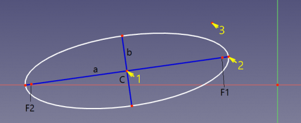

Description
Cet outil dessine une ellipse en choisissant trois points: le centre, la fin du rayon majeur, le rayon mineur.
Lors du démarrage de l'outil, le pointeur de la souris passe à une croix blanche avec une icône d'ellipse rouge. En outre, les coordonnées sont affichées en temps réel.
 La séquence de clics est indiquée par des flèches jaunes avec des nombres. C est le centre, a - diamètre principal, b - diamètre mineur, F1, F2 sont les foyers.
Utilisation
- Cliquer sur le bouton de la barre d'outils, en choisissant l'élément de menu, ou en utilisant le raccourci clavier (il faut d'abord attribuer la touche dans Personnalisation de l'interface).
- Le premier clic dans la vue 3D, définit le centre de l'ellipse. Le deuxième clic définit le premier rayon et l'orientation de l'ellipse. Le troisième clic définit l'autre rayon et le début de l'arc. le quatrième clic définit le point final.
- Après le quatrième clic, l'arc d'ellipse est créée, ainsi que l' ensemble de géométrie de construction (en traits bleu) aligné (diamètre principal, diamètre mineur, deux foyers). La géométrie de la construction peut être supprimée manuellement si elle n'est pas nécessaire et recréée ultérieurement. Voir Contrainte d'alignement interne et Sketcher Afficher masquer la géométrie interne.
- En appuyant sur ESC ou en cliquant sur le bouton droit de la souris, vous annulez la fonction.
Particularités
- Les axes majeurs et mineurs des ellipses sont stricts et ne peuvent pas être échangés en redimensionnant l'ellipse. Ceci est une conséquence de la paramétrage du solveur utilisé (centre (x, y), focus1 (x, y) et longueur de rayon mineur (b)) et le même comportement strict de OpenCascade. L'ellipse doit être tournée pour échanger les axes.
- L'arc d'Ellipse peut fonctionner comme un arc de cercle lorsque ses lignes de diamètre majeur et mineur sont supprimées, et l'un des foyers est contraint de coïncider avec le centre. Mais la contrainte de rayon ne fonctionnera pas sur une telle ellipse.
- Déplacer l'ellipse par un bord donne le même résultat que le centre de l'ellipse.
Version
Introduite dans FreeCAD v0.15.4309
{kind=link}
{kind=link}